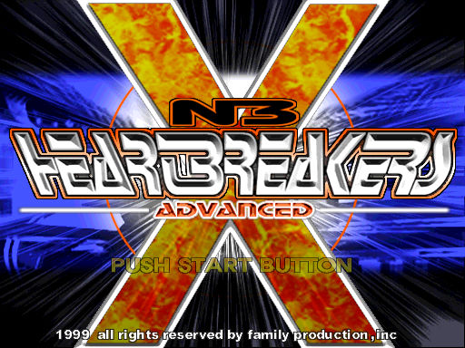
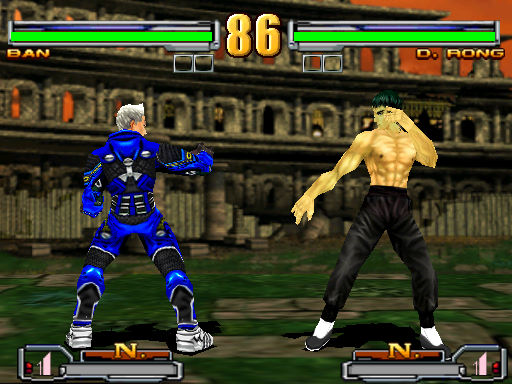

名稱：心跳一百 (Heart Breakers／NB Heart Breakers Advanced，英文版) 簡介：韓國Family 1999年出品的格鬥遊戲，由eSofnet代理發行 [待補]。

保護：無，放入光碟才有背景音樂 備註：VirtualBox無法執行，虛擬機請使用VMware。 備註：建議在PCem/86Box+Win9x系統上執行，否則選單消失速度會過快，來不及選取。 檔案：xp-fix.rar = XP以上系統修正檔 操作： F1 = 主畫面 F2 = 設定 Esc = 離開遊戲 1P 2P ------------------------ 左 D 左 右 G 右 跳起 R 上 蹲下 F 下 輕拳 A I 重拳 Tab K 輕踢 CapsLock U 重踢 Q J